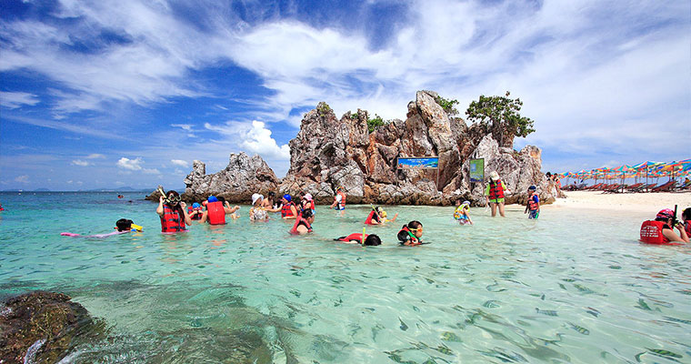

蛋岛
蛋岛是位于普吉南部的外岛。因形状像个光秃秃的鸡蛋，细软洁白的沙滩，就像一个鸡蛋的外壳， 因而得到“鸡蛋岛”美名。这里的珊瑚礁十分美丽，鱼群量较大，适合浮潜。蛋岛上热带植物也较为丰富。 蛋岛的冬夏无常每年的三月到九月为雨季，特别熟五月份几乎天天降雨，一直到十月份仍会有短暂的潮湿天气， 等到十一月份中旬的时候，天气会稍微的好一些，降雨减少，直到第二年的三月， 所以，去蛋岛旅游的最佳时间是每年的十一月到次年的四月。 上午行程
下午行程
| 如何使用电子票： | 我们会发送电子票到你的邮箱中，至消费地点手机出示电子票即可（建议打印，以免出现手机没电、清晰度不够等问题）。 |
| 包含费用： |
1、Patong（芭东）、Karon（卡伦）、Kata（卡塔）海滩和查隆地区酒店-码头往返空调巴士，普吉码头-皇帝岛往返快艇。
2、中文导游。
3、软饮，矿泉水，水果。
4、浮潜用具（面镜，呼吸管）、救生衣。
5、旅游意外医疗保险。
|
| 未包含费用： | 超区接送费Kamala 100 泰铢/人；Surin, Bang Tao, Naiharn, Cape Panwa200泰铢/人；Laguna, Naiyang, Naithon, Layan, Mai Khao 1200 泰铢/包车。 |
| 使用说明： | 本产品由厦门博游旅游社股份有限公司代理招徕，委托社为普吉印地旅游有限公司，具体的旅游服务与操作由委托社提供。 我们会发送订单确认函至您的邮箱，请您仔细阅读订单确认函的内容详情，至消费地点出示电子版或自行打印的纸质版订单确认函即可。。 |
| 适用年龄： |
1. 成人：12周岁（含）以上。
2. 儿童：4周岁（含）-11周岁（含）。
3. 婴儿：3周岁（含）以下，免费。
4. 老人：60周岁（含）以上，不可参团，敬请谅解。
|
| 消费地址： | 普吉岛 |
| 退改政策： |
我们提供“退改服务”，细则如下：
①预约消费日期前15天提出退改（无需理由），不收取任何费用。
②预约消费日期前4-14天提出退改，收取支付金额30%的手续费。
③预约消费日期前3天内不支持退款。
|
| 温馨提示： |
我们提供“退改服务”，细则如下：
○带5岁以下宝宝出游的话，充气救生衣在水里好像不容易掌握平衡，宝宝可能不爱穿，建议某宝上买泡沫救生衣。
○如果由于不可抗力因素导致行程取消，我们会退还您的预定费用，请见谅！
○参考行程仅为参考，参考行程仅为参考，具体游览的时间有可能因为天气等原因而有所变化，实际以当天导游安排为准
|